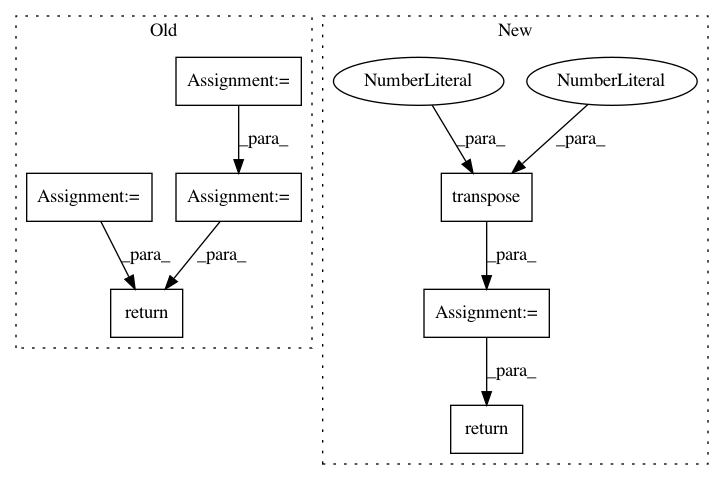

3218a3987ef9f83d1ad5efd6f96d6f6c741c3cfa,python/eight_mile/pytorch/layers.py,,viterbi,#Any#Any#Any#Any#Any#Any#,776
Before Change
seq_len, batch_size, tag_size = unary.size()
min_length = torch.min(lengths)
batch_range = torch.arange(batch_size, dtype=torch.int64)
backpointers = []
// Alphas: [B, 1, N]
alphas = torch.Tensor(batch_size, 1, tag_size).fill_(-1e4).to(unary.device)
alphas[:, 0, start_idx] = 0
alphas = F.log_softmax(alphas, dim=-1) if norm else alphas
for i, unary_t in enumerate(unary):
next_tag_var = alphas + trans
viterbi, best_tag_ids = torch.max(next_tag_var, 2)
backpointers.append(best_tag_ids.data)
new_alphas = viterbi + unary_t
new_alphas.unsqueeze_(1)
if i >= min_length:
mask = (i < lengths).view(-1, 1, 1)
alphas = alphas.masked_fill(mask, 0) + new_alphas.masked_fill(mask == 0, 0)
else:
alphas = new_alphas
// Add end tag
terminal_var = alphas.squeeze(1) + trans[:, end_idx]
_, best_tag_id = torch.max(terminal_var, 1)
path_score = terminal_var[batch_range, best_tag_id] // Select best_tag from each batch
best_path = [best_tag_id]
// Flip lengths
rev_len = seq_len - lengths - 1
for i, backpointer_t in enumerate(reversed(backpointers)):
// Get new best tag candidate
new_best_tag_id = backpointer_t[batch_range, best_tag_id]
// We are going backwards now, if you passed your flipped length then you aren"t in your real results yet
mask = (i > rev_len)
best_tag_id = best_tag_id.masked_fill(mask, 0) + new_best_tag_id.masked_fill(mask == 0, 0)
best_path.append(best_tag_id)
_ = best_path.pop()
best_path.reverse()
best_path = torch.stack(best_path)
// Return list of paths
paths = []
best_path = best_path.transpose(0, 1)
for path, length in zip(best_path, lengths):
paths.append(path[:length])
return paths, path_score.squeeze(0)
class TaggerGreedyDecoder(nn.Module):
After Change
best_path = torch.stack(best_path)
// Mask out the extra tags (This might be pointless given that anything that
// will use this as a dense tensor downstream will mask it itself?)
seq_mask = sequence_mask(lengths).to(best_path.device).transpose(0, 1)
best_path = best_path.masked_fill(seq_mask == 0, 0)
return best_path, path_score
class TaggerGreedyDecoder(nn.Module):
In pattern: SUPERPATTERN
Frequency: 4
Non-data size: 7
Instances
Project Name: dpressel/mead-baseline
Commit Name: 3218a3987ef9f83d1ad5efd6f96d6f6c741c3cfa
Time: 2019-09-27
Author: dpressel@gmail.com
File Name: python/eight_mile/pytorch/layers.py
Class Name:
Method Name: viterbi
Project Name: interactiveaudiolab/nussl
Commit Name: 2ffbfa3a6bd3b8de8e21a762489346054dcd9ccc
Time: 2020-03-12
Author: prem@u.northwestern.edu
File Name: nussl/separation/deep/deep_mask_estimation.py
Class Name: DeepMaskEstimation
Method Name: extract_features
Project Name: OpenNMT/OpenNMT-py
Commit Name: b5486aaea994960688152e91fbab7699dc04e8c1
Time: 2017-08-14
Author: taolei@csail.mit.edu
File Name: onmt/modules/GlobalAttention.py
Class Name: GlobalAttention
Method Name: score
Project Name: rusty1s/pytorch_geometric
Commit Name: d8a075668b6e9cdf4c08f6c7285e5c7d2fbf5332
Time: 2017-10-17
Author: matthias.fey@tu-dortmund.de
File Name: torch_geometric/graph/geometry.py
Class Name:
Method Name: edges_from_faces